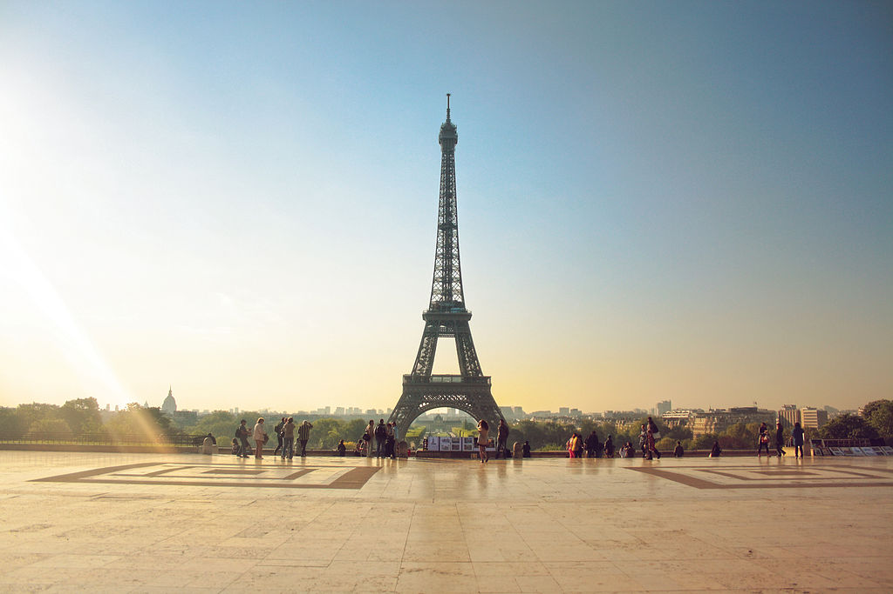

Bienvenue à
Paris

Tourism in Paris is a major income source.
In 2018, 17.95 million international, overnighting tourists visited the city, mainly for sightseeing and shopping (and estimated to be well over double if including domestic overnighting visitors).
Top sights include Notre Dame (12 million visitors in 2017), Disneyland Paris (11), Sacre Cœur (10), the Versailles Palace (7.7), the Louvre Museum (6.9), the Eiffel Tower (5.9), Centre Pompidou (3.33), and the Musée d'Orsay (3 million). The largest numbers of foreign tourists who come to the Paris region are British, American, German, Italian, Chinese, and Canadian.In 2012, 263,212 salaried workers in Paris, or 18.4 percent of the total number of workers, were engaged in tourism-related sectors; hotels, catering, transport, and leisure.In 2014 visitors to Paris spent 17 billion dollars (13.58 billion Euros), the third highest sum globally after London and New York.
The Eiffel Tower (La Tour Eiffel)
The Eiffel Tower is acknowledged as the universal symbol of Paris and France. It was originally designed by Émile Nouguier and Maurice Koechlin. In March 1885 Gustave Eiffel, known primarily as a successful iron engineer, submitted a plan for a tower to the French Ministre du Commerce et de l'Industrie.He entered a competition for students studying at the university. The winning proposal would stand as the centerpiece of the 1889 Exposition. Eiffel's was one of over 100 submissions. Eiffel's proposal was finally chosen in June 1886. Even before its construction, the Tower's uniqueness was noticed. The Eiffel Tower was finally inaugurated on March 31, 1889.Currently about 6.9 million people visit the Eiffel tower each year.
The Arc de Triomphe

The Arc de Triomphe de l'Étoile is one of the most famous monuments in Paris. It stands in the centre of the Place Charles de Gaulle (originally named Place de l'Étoile), at the western end of the Champs-Élysées.It should not be confused with a smaller arch, the Arc de Triomphe du Carrousel, which stands west of the Louvre. The Arc de Triomphe (in English: "Triumphal Arch") honours those who fought and died for France in the French Revolutionary and the Napoleonic Wars, with the names of all French victories and generals inscribed on its inner and outer surfaces. Beneath its vault lies the Tomb of the Unknown Soldier from World War I. The Arc de Triomphe is the linchpin of the historic axis (Axe historique) – a sequence of monuments and grand thoroughfares on a route which goes from the courtyard of the Louvre, to the Grande Arche de la Défense.
Musée du Louvre (Louvre Museum)
.jpg)
The Louvre Palace, originally built as a medieval fortress in the year 1190 by King Philippe Auguste, was transformed by successive governments. Since the French Revolution it has hosted the Musée du Louvre, one of the largest museums of the western world.It houses some of the most popular and culturally ethnic form of art. The Louvre opened to the public on August 10, 1793.On March 3, 1989, I.M. Pei inaugurated his Glass Pyramid,which also serves as an official entrance to the main exhibition hall, which in turn leads to the temporary exhibition halls. The Musée is divided into three wings: Sully, Richelieu, and Denon, which showcase 35,000 pieces of art, much of it dating back to the Middle Ages.Some of the most renowned pieces of art in the Louvre are Leonardo da Vinci's Mona Lisa, Venus of Milo, the Winged Victory of Samothrace, Liberty Leading the People, and the Dying Slave by Michelangelo.
Disneyland Paris

Disneyland Paris, formerly Euro Disney Resort, is an entertainment resort in Chessy, France, a town located 32 km (20 mi) east of the centre of Paris. It encompasses two theme parks, many resort hotels, Disney Nature Resorts, a shopping, dining, and entertainment complex, and a golf course, in addition to several additional recreational and entertainment venues. Disneyland Park is the original theme park of the complex, opening with the resort on 12 April 1992. A second theme park, Walt Disney Studios Park, opened in 2002, 10 years after the original park. Disneyland Paris celebrated its 25th anniversary in 2017. Within 25 years of opening, 320 million people visited Disneyland Paris, making it the most visited theme park in Europe.[1] The Parisian resort is the second Disney park to open outside the United States following the opening of the Tokyo Disney Resort in 1983 and is the largest Disney resort to open outside of the United States. Disneyland Paris is also the only Disney resort outside of the United States to be completely owned by The Walt Disney Company.